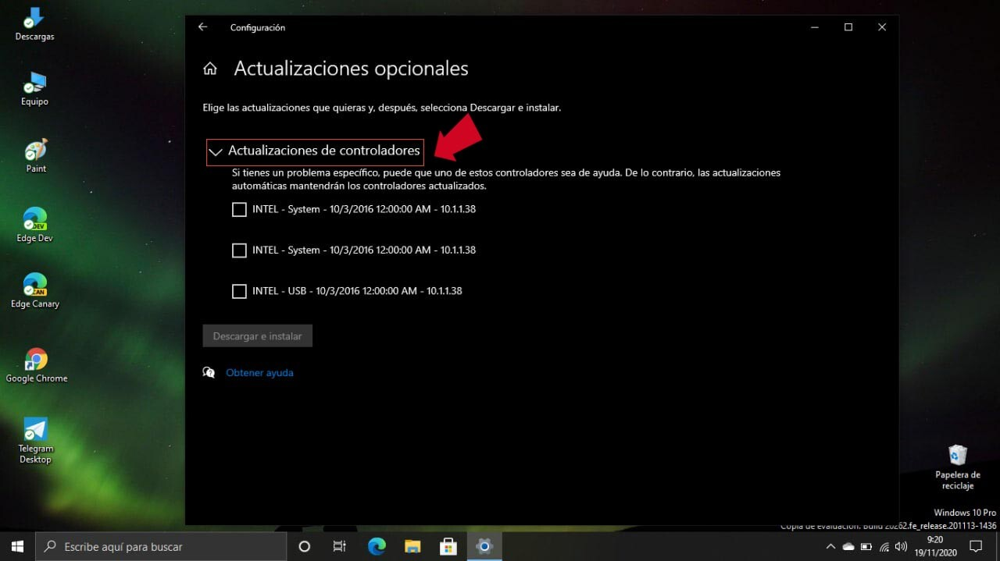

1. Explicación del Concepto: Vectores de Infección y la Evolución del Software Malicioso
El malware (software malicioso) ha evolucionado drásticamente, dejando de ser simples virus molestos para convertirse en herramientas sofisticadas de espionaje, robo de datos y secuestro de sistemas corporativos.
¿Cómo se propaga en la actualidad? Las ciberamenazas ya no dependen únicamente de que el usuario abra un archivo ejecutable sospechoso. Hoy en día existen técnicas avanzadas como los ataques "Drive-by Download", donde el simple hecho de visitar un sitio web legítimo pero previamente vulnerado por atacantes puede descargar e instalar código malicioso en segundo plano aprovechando brechas en los navegadores desactualizados.
Una vez que el malware logra colarse en un solo dispositivo, busca propagarse lateralmente a través de la red local, comprometiendo servidores centrales y paralizando operaciones completas en cuestión de minutos.


2. Ejemplo Práctico: Protocolos de Emergencia en la Infraestructura
Cuando los sistemas corporativos e institucionales sufren un incidente o una alerta crítica de seguridad, se activa de inmediato un plan de respuesta conjunta en el área de TI:
Aislamiento y Mitigación
Ante una intrusión, los ingenieros aíslan de inmediato los segmentos de red afectados para cortar la comunicación del malware, evitando que se extienda de una máquina a otras estaciones de trabajo.
Cierre y Aseguramiento
Se desactivan temporalmente los servidores expuestos o vulnerados y se procede a aplicar parches de seguridad urgentes en los sistemas operativos (muchas veces basados en Linux) para cerrar la brecha explotada.
Defensa Inteligente
Se despliegan sistemas avanzados de detección heurística y basados en IA, los cuales no buscan virus conocidos, sino que analizan comportamientos extraños del sistema para detener amenazas nuevas antes de que actúen.

3. Reflexión Personal
¿Por qué elegí este tema?
Decidí abordar el malware y la seguridad informática porque en clase se suelen aprender las definiciones teóricas de los virus, pero no el trasfondo de cómo operan en la vida real. Me llamó mucho la atención comprender que todo está conectado: desde un simple software no deseado en un teléfono móvil hasta las alertas críticas de seguridad que paralizan plataformas institucionales. Ver cómo un incidente puede generar un efecto dominó en los servidores me hizo entender la enorme responsabilidad que recae sobre el personal técnico de infraestructura.
¿Dónde se aplica y su valor profesional?
Se aplica en la protección diaria de cualquier infraestructura tecnológica, bases de datos y desarrollo web. Para mí, como estudiante de ingeniería, comprender cómo se defienden los sistemas y cómo opera un antivirus es crucial. Ya sea configurando una red simulada, administrando un servidor físico en un data center o subiendo código a GitHub, la ciberseguridad debe implementarse desde el primer día para evitar brechas que comprometan la continuidad de toda una organización.